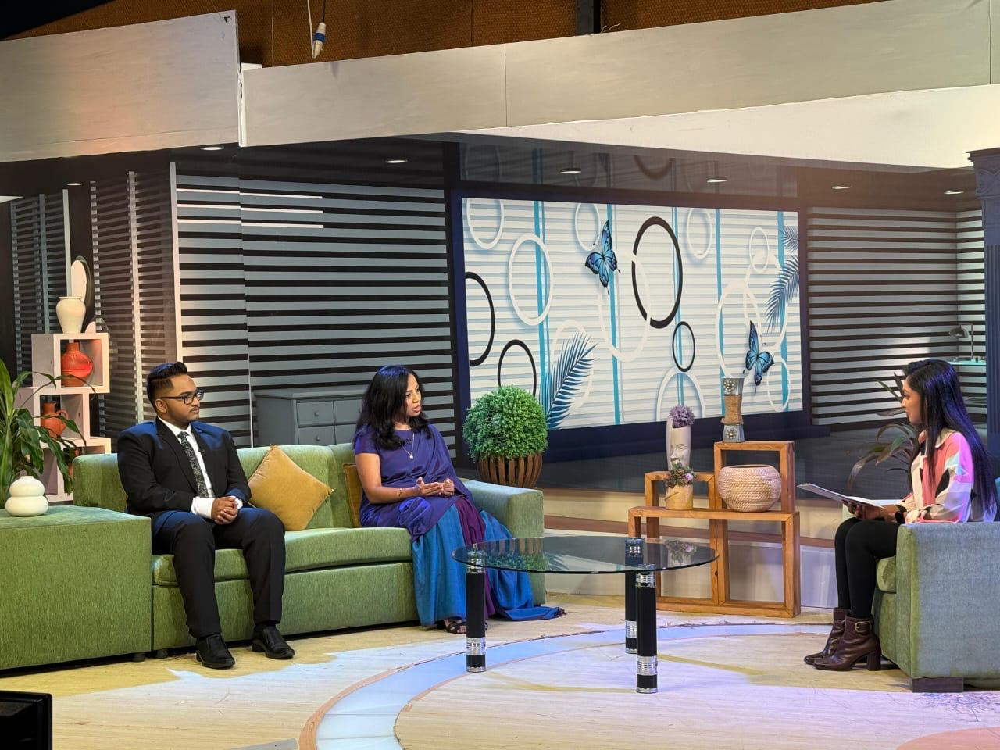
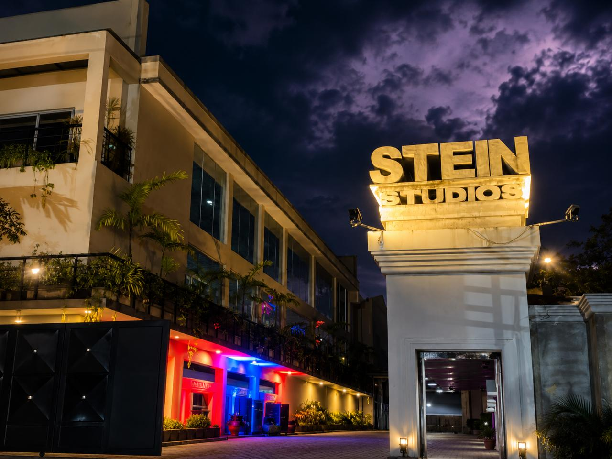
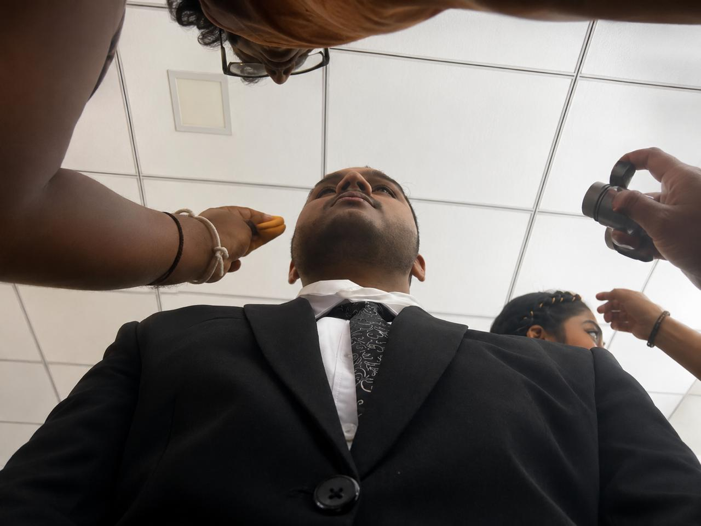
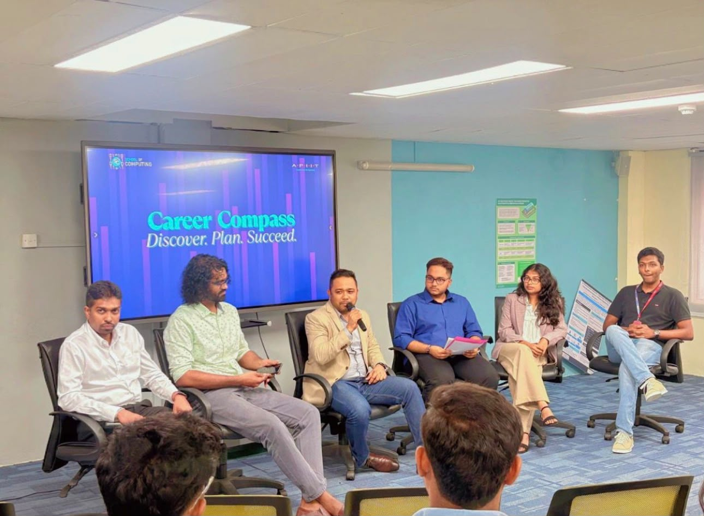
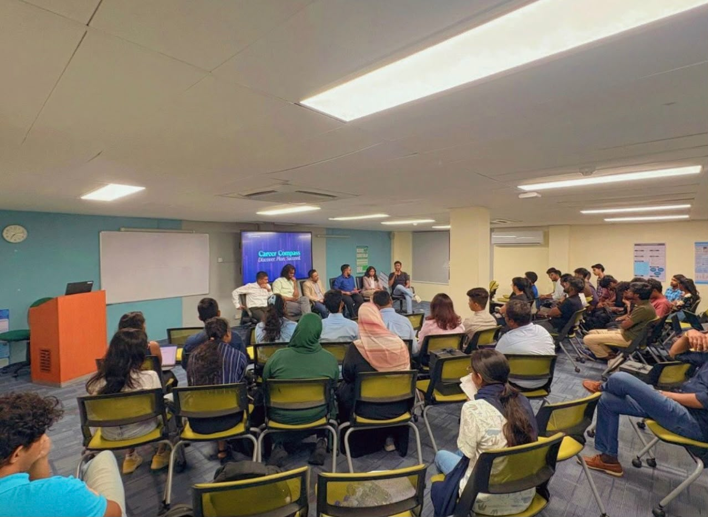
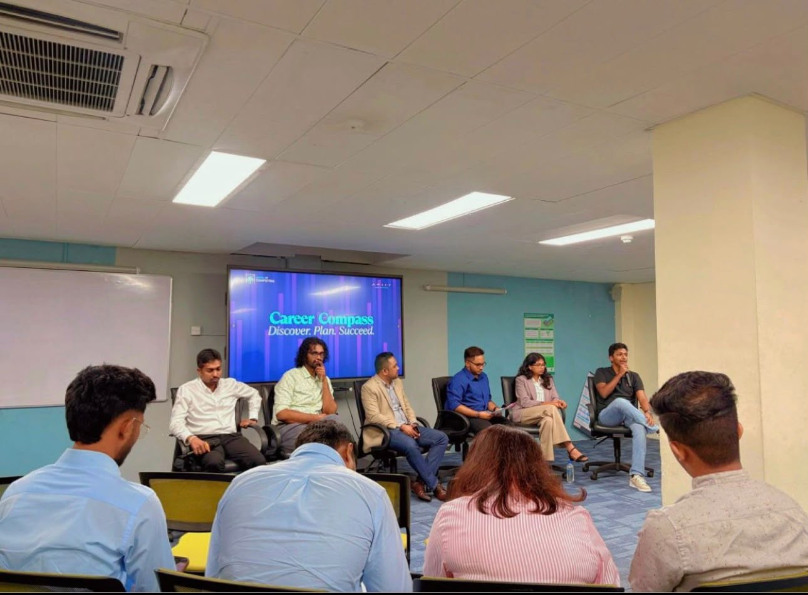
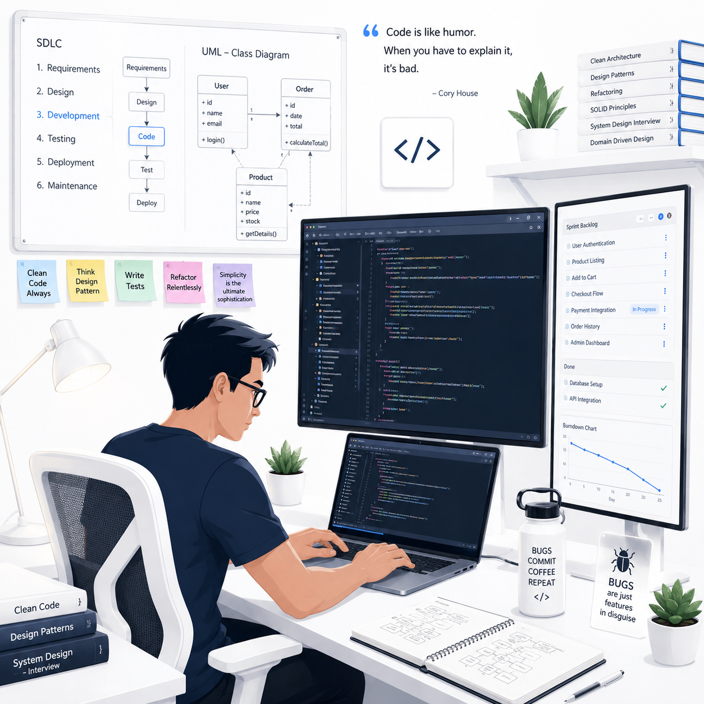
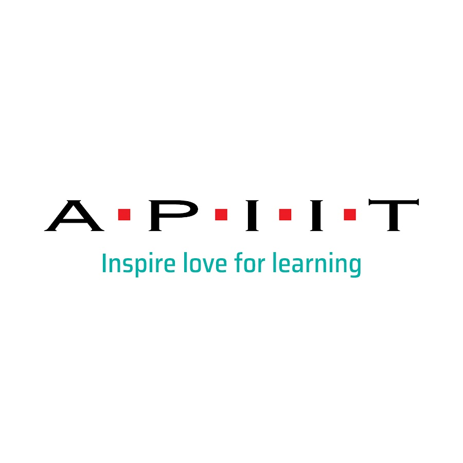
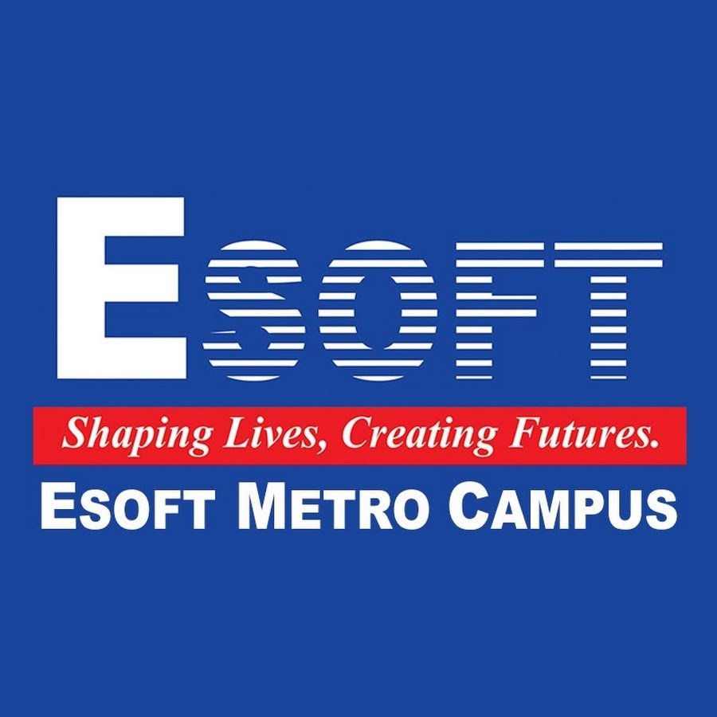
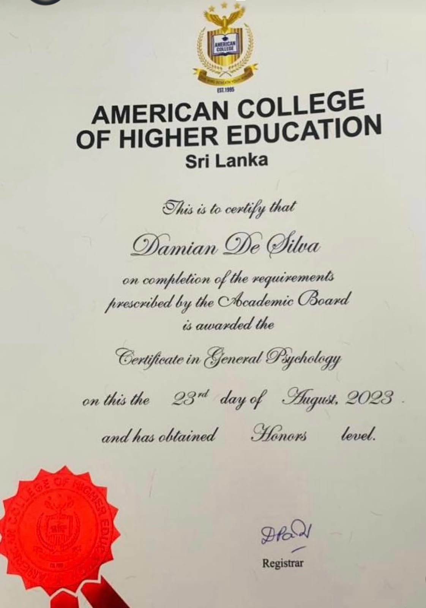

Product & Project Manager · Sri Lanka
My experience speaks before my title. I've shipped a product and delivered projects end-to-end planning, scheduling, stakeholder coordination, and validation. I've spoken on national TV, led stakeholder research with 102 participants, and been elected by my peers - twice. Scroll to see what I've actually done.
First National TV Appearance
Selected to represent my university on Sirasa TV, I made my first live national television appearance with only minutes to communicate a clear and engaging message to a national audience. The experience tested the same skills I bring to product management: understanding what needs to be communicated, shaping the message for an audience, pitching with confidence, and staying composed when the pressure is real.
A live test of my ability to communicate clearly, pitch confidently, and perform under pressure.
As seen on Sirasa TV



Speaking & Media
Selected as a student speaker and panel interviewer, I led conversations with professionals across business, finance, and technology-asking the questions students needed answered and translating real-world industry experience into clear career pathways.



On the same stage as
Altrium · Sentiva · 99X · Surge Global · Abans FinanceProduct / Project Management
Research-led, evidence-based product thinking from problem discovery to shipped solutions.
I also lead project delivery: creating roadmaps, managing scope, coordinating cross-functional teams, and validating outcomes against success criteria.
Research-led smart bus reservation product built through discovery, stakeholder research, Agile delivery and validation.
Kapruka post-purchase support case study focused on transparent complaint tracking, resolution accountability and service recovery.
The Hard Way
I started as a Software Engineering undergraduate. Partway in, with my family's encouragement, I took on a second major, Business Management, alongside it. Coding deadlines and business assignments colliding in the same week nearly broke me more than once. But that double load gave me something most people don't have: technical fluency and business thinking, together. It's exactly what pulled me toward Product Management.

Elected Leadership
Trust like that isn't given on day one. It's built progressively through consistency, showing up for people, and proving you'll represent their interests before you ever ask for the role. I've done that at two separate institutions.


A Bit of a Detour
Taking on a Psychology certification wasn't the safe choice - it was a genuine risk
stepping outside my commerce background. But hard work and determination got me through it,
and it turned out to be one of the most useful things I've ever studied.
I learned how people actually think - what a hesitant pause means, what a raised eyebrow signals,
why users say one thing and do another. That's not a side skill for a Product Manager.
That's the whole job.

One More Thing
St. Thomas' College
Beyond psychology, I am also certified in Media Presentation & Communications and was awarded Best Compère – Intermediate Level in 2022. It strengthened my ability to read an audience, communicate clearly, and hold attention-skills I now bring into stakeholder conversations, product pitches, and presentations.
Let's Talk
I've shown you the research, the product, the stages, and the proof. If you're hiring for someone who thinks before they build - let's talk.